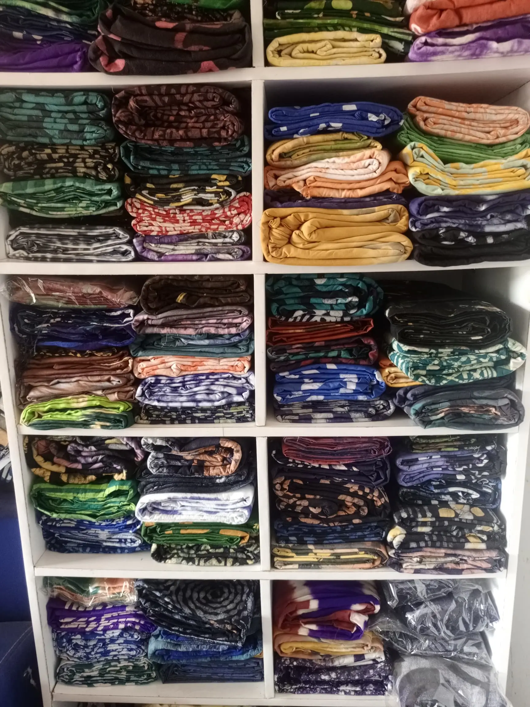
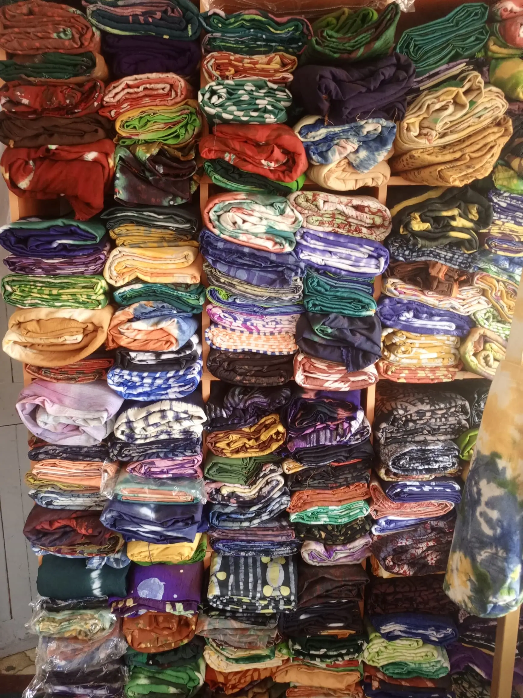
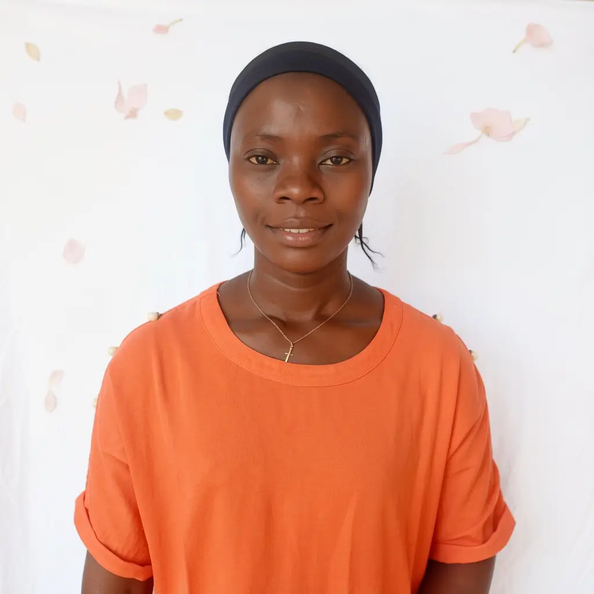

Ile-Ife, Osun State · Est. Nigeria
We are not a factory. We are a family of artisans keeping one of Nigeria's most powerful textile traditions alive — one hand-dyed piece at a time.
Read Our Story
Who We Are
Ronaks Adire was born from a deep love for the Yoruba tradition of resist-dyeing — a craft that has been practiced in Ile-Ife for centuries, long before fashion became an industry.
We saw a market flooded with imitations. Mass-printed fabrics pretending to be Adire, sold cheaply and stripped of meaning. We knew there was a better way — and a market of Nigerians who deserved better.
So we went back to the source. We built direct relationships with master artisans in Osun State, people who have been mixing indigo and cassava paste since before they could walk. We learned from them, invested in them, and built Ronaks around their hands.
Every piece you receive from us is genuinely hand-dyed, individually inspected, and packaged with the intention it deserves. No shortcuts. No imitations. Only Adire.
The Ronaks Standard
In a world of fast fashion and cheap replicas, we made a deliberate choice to go slow, go deep, and go authentic. Here is what that means in practice.
We work directly with our artisans. That means better quality control, fairer wages for the people making your clothes, and better prices for you.
Every Ronaks piece is made using traditional resist-dyeing — cassava paste, raffia, and natural indigo. Nothing machine-printed. Nothing fake.
A single piece can take two to three days to dye properly. We never cut that process short. The colour you see is the colour that will last.
From Vat to Wardrobe
There are no shortcuts in our process. Each piece passes through careful hands before it reaches yours.
We source only premium-grade Silk, Tissue Chiffon, and Batik Cotton. Every bolt is hand-checked for weight, texture, and dye readiness before the process begins.
Our artisans apply cassava paste or raffia thread by hand to create the distinctive Adire patterns. Each design carries meaning rooted in centuries of Yoruba visual language.
Fabric enters the indigo vat, is lifted into open air to oxidise, then re-submerged. This cycle repeats over one to three days. Depth of colour is earned — never faked.
The resist is carefully removed by hand. The fabric is washed in clean water, rinsed thoroughly, and dried flat under natural sunlight — never tumble dried.
Every finished piece is inspected under natural light for colour evenness, pattern clarity, and fabric integrity. If it does not meet the Ronaks standard, it does not ship.
Each piece is folded in tissue paper, placed in a Ronaks box, and sealed before it makes its way to your door — nationwide across all 36 states.

A Note from the Founder
Growing up around Adire, I never saw it the way the market treated it — cheap, interchangeable, easy to ignore. To me it was always something sacred. The patience behind it. The knowledge you needed. The fact that every piece came out slightly different from the last.
When I started Ronaks, I made one decision early: we would never compromise the process to save time or money. The indigo vat takes what it takes. The cassava paste sets when it sets. Our artisans work at the pace the craft demands — and we pay them fairly for every hour of it.
The response has been humbling. Customers who receive their first Ronaks piece and message us saying they didn't expect it to feel this way. That they wore it somewhere and couldn't stop answering questions about where it came from.
That is exactly what we set out to build. Not just beautiful fabric — but something that carries a conversation with it.
Thank you for being part of this.
What We Stand For
The principles that guide every cut, every dye, and every stitch.
We source only the highest-grade fabrics. If it does not feel exceptional against the skin, it does not carry the Ronaks name.
Our artisans in Osun State receive fair wages and safe conditions. Their craft is the foundation of everything we do — we treat it that way.
We do not borrow aesthetics for trend. Every pattern, every technique, every colour choice is rooted in genuine Yoruba textile tradition.
No two hand-dyed pieces are ever identical. When you wear Ronaks, you are wearing something that exists nowhere else in the world.
Questions & Answers
Genuinely hand-dyed, every single piece. We use traditional resist techniques cassava paste and raffia applied by our artisans in Ile-Ife. The process takes one to three days per piece. Machine-printed fabric is not Adire and we will never sell it as such.
Yes — we deliver to all 36 states. Lagos, Abuja, and Port Harcourt orders are typically fulfilled within 48 hours. Other states take 2-5 business days. Message us on WhatsApp for a delivery estimate specific to your location.
Hand wash in cool water with a gentle, colour-safe detergent. Never machine wash or tumble dry. Dry flat in the shade. Iron on a low setting with a cloth between the iron and the fabric. Cared for properly, your Ronaks piece will hold its colour and drape for years.
Yes. We accept custom commissions and bulk orders for events, weddings, corporate gifting, and retail. Use the Designs page on our site to upload your reference, or simply message us directly on WhatsApp. Custom orders typically require a 2-3 week lead time.
Because every piece is individually hand-dyed and one of a kind, we do not accept standard returns. However, if your order arrives damaged or significantly different from what was described, we will make it right immediately — replacement or full refund. Your satisfaction is not negotiable to us.
Yes, we run hands-on Adire dyeing workshops at our Ile-Ife studio. These are immersive sessions where you learn the resist technique, mix your own dyes, and leave with a piece you made yourself. Visit the Training section of our site or message us to book.
Visit Ronak Fabric Studio
Step into our workshop to feel the textures, see the vibrant indigo vats, and discover the meticulous craftsmanship behind every Ronaks piece.